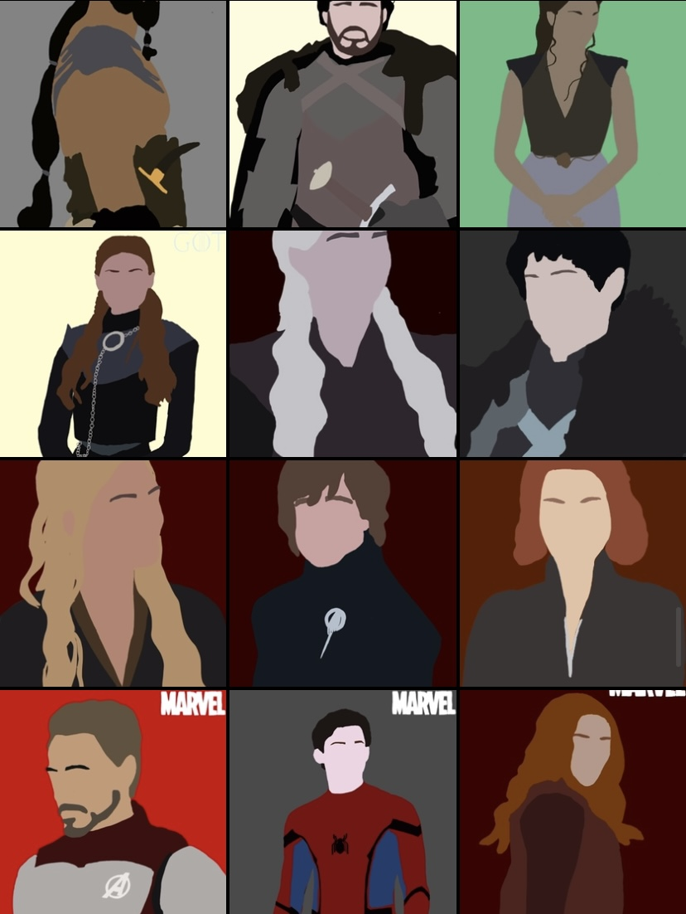
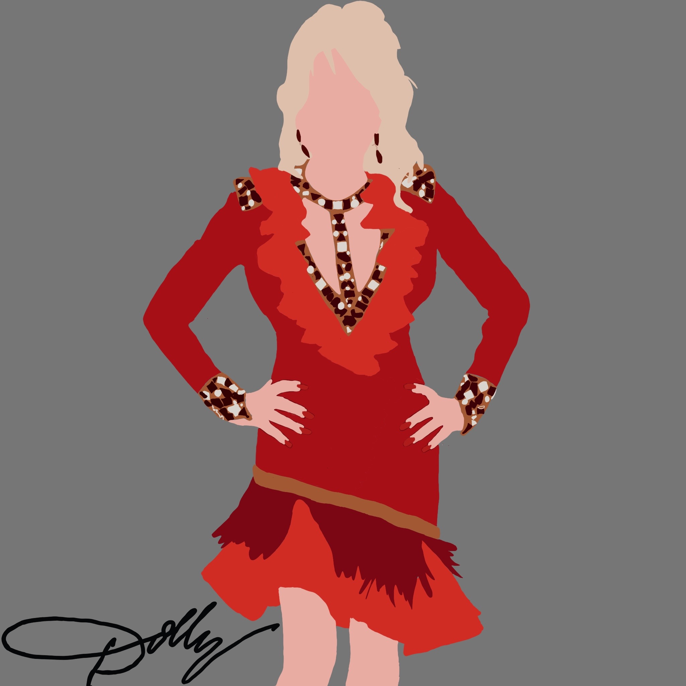
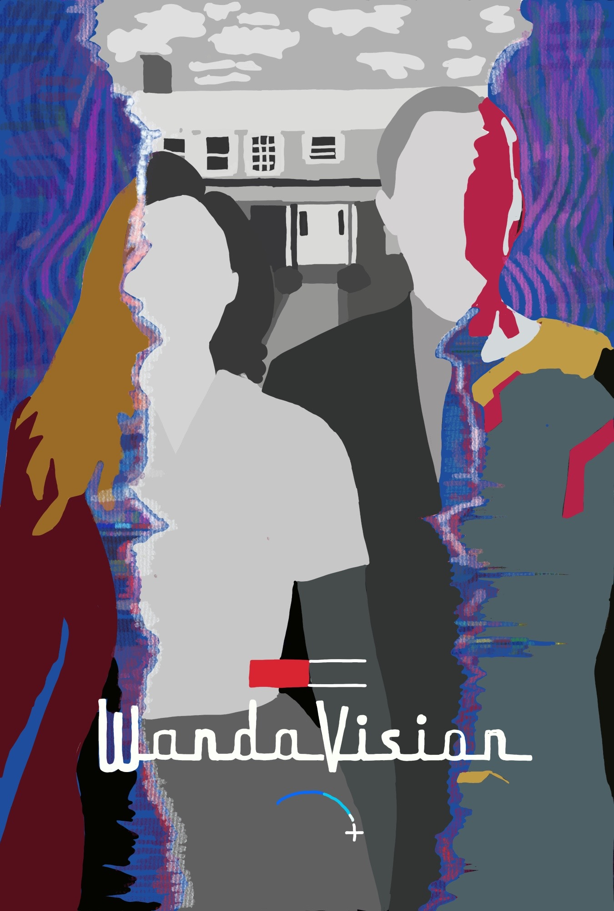
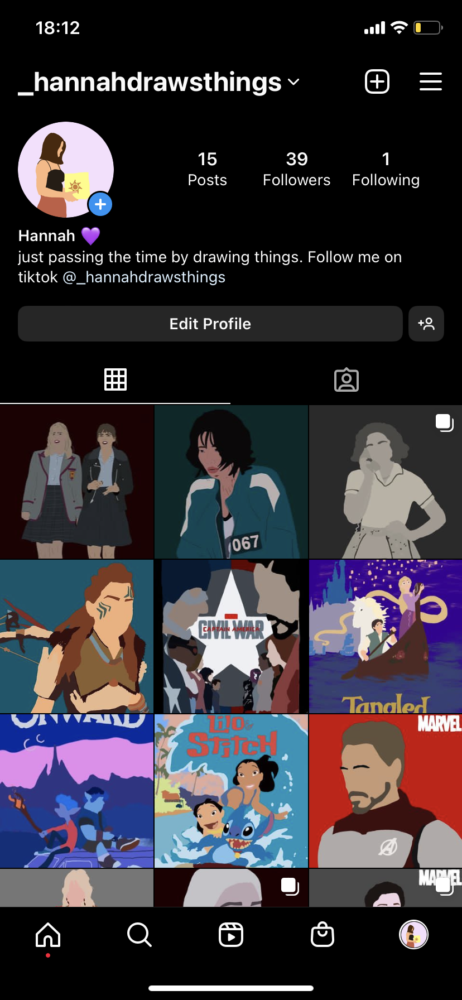
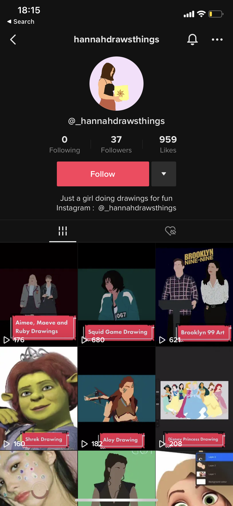

Digital Art and Social Media
On of my favourite hobbies outside of my studies is to create digital art work and post about them on social media accounts that I have created. A few years ago I got an iPad and ever since I have loved using Procreate to draw some of my favourite characters and movie posters from throughout the years.


During lockdown, I had a lot of down time and therefore was able to practice my digital design skills in order to make them of a higher quality. I was thinking about the prospect of selling some of the art in the future as I have gifted pieces to family and friends and they love them. These are a couple of my favourite drawings that I have done. Learning how to use this software on top of my use of Adobe Creative Suite has really devloped my skills in digital drawing, marketing and designing.


As I enjoyed making the drawings so much and had seen some other people promoting their art work on social media, I decided I would give this a go as well. I am a huge social media fan and spend a lot of time enjoying content from creators on the different apps, so was very excited about the opportunity to create something of my own. I created an Instagram account where I posted a lot of the drawings I did with the appropriate hashtags to try and get them recognised on the app. I also decided I would make some TikToks where I screen recorded myself doing the different drawings and then edited these with sounds and effects to post sped up versions. I knew that TikTok was an app where people don't like to spend a long time watching one video so I tried to keep them short and snappy to gain the most attention.
